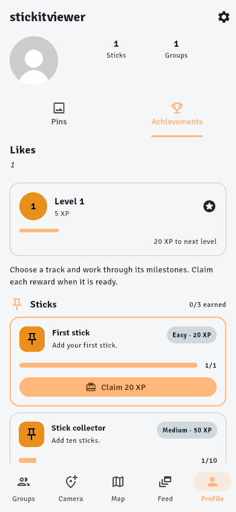
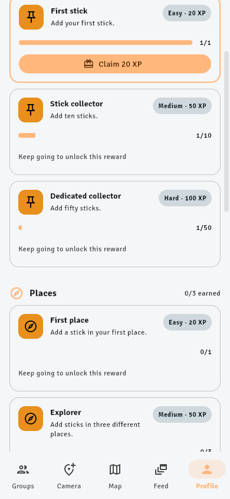
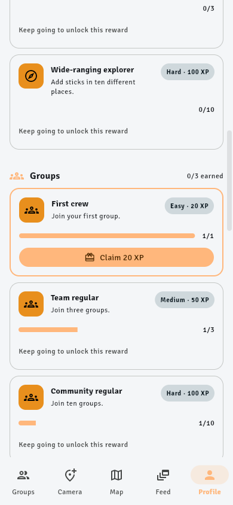
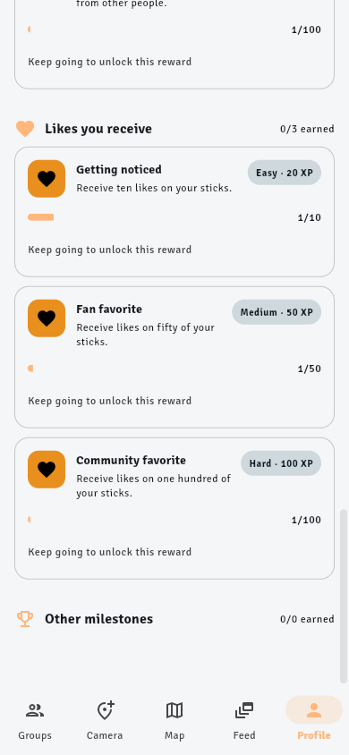
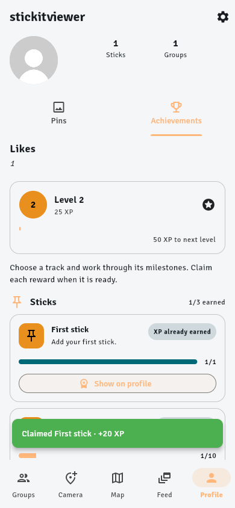
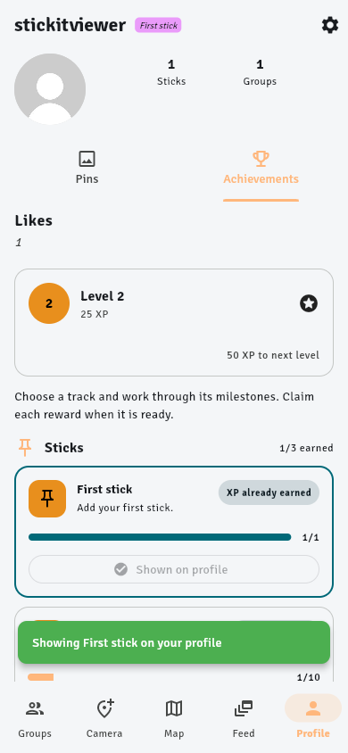

Progression UX walkthrough screenshots
Personal achievements

Personal achievements: XP, instructions, first ready reward

Long milestone catalog while scrolling

A second ready reward several screens below the first

Later tracks and an empty 0/0 section

Claimed reward: XP and level changed; Show on profile appears
 After the second action, the badge is selected
After the second action, the badge is selected

Actual small text badge shown by the username
Map markers and pin details